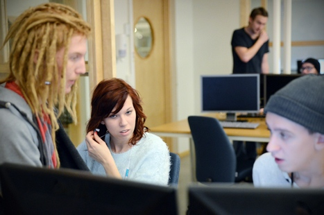

Utbildningsmässa
Jenny Nyström, 2015-03-16
Datavetenskapliga utbildningar
vid Linnéuniversitetet
Jacob Lindehoff
Programansvarig
Johan Leitet
Programmansvarig
webbprogrammerare.se


Browser Wars I
90-talet
Foto cc: http://www.flickr.com/photos/bobsfever/

98%
Tolv till femtonåringar med smart mobil
Källa: "Svenskarna och Internet 2014"
Foto cc by Johan Larsson: http://www.flickr.com/photos/johanl/

"Mobile First"
Foto cc by Johan Larsson: http://www.flickr.com/photos/johanl/

Öppna data
SMHI
Foto CC: http://www.flickr.com/photos/ejpphoto/

E-hälsa
Foto CC: http://www.flickr.com/photos/jdhancock/

100% webb
"Nothing but the web" http://googleenterprise.blogspot.se/2010/12/nothing-but-web.html
Foto CC: http://www.flickr.com/photos/moridin3335/

Foto CC: http://www.flickr.com/photos/samsungtomorrow/

Photo CC: http://www.flickr.com/photos/hubertgajewski

Kontorsprogram
Photo CC: http://www.flickr.com/photos/ellenm1

Utvecklingsmiljöer

Appar
Foto cc by Johan Larsson: http://www.flickr.com/photos/johanl/

Spel
Foto cc: http://www.flickr.com/photos/brendanlynch
HTML5, JS

Förr
Foto cc: https://www.flickr.com/photos/blude/
Idag
Foto cc: https://www.flickr.com/photos/blude/
Utveckling och drift av mjukvarusystem
3 år Kalmar/distans
- Lär dig både att programmera och att driftsätta och underhålla IT-system för mjukvaran
- Ger dig verktygen och förståelsen för kontinuerlig leverans av en väl fungerande mjukvara
- Kunskapen förankras i externa projekt och praktiska moment i modern nätverks- och servermiljö
Utveckling och drift av mjukvarusystem
3 år Kalmar/distans
- Utvecklare
- Testar
- Mjukvaruarkitekt
- DevOps
- IT-konsult
- Programmerare
Webbprogrammerare
2+1 år Kalmar/distans
-
Lär dig programmering med ett starkt fokus på klient- och serverbaserade webbapplikationer
- Du kommer att få arbeta med moderna ramverk och tekniker i en spännande och framåtriktad bransch
- Kan läsas på campus i Kalmar, eller helt på distans utan obligatoriska träffar

Webbprogrammerare
2+1 år Kalmar/distans
- Webbutvecklare
- Programmerare
- Gränssnittsutvecklare
- IT-konsult
- App-utvecklare
- Egenföretagare/startup
Läs mer på: Webbprogrammerare.se
Nätverkssäkerhet
3 år i Växjö
- Berör viktiga områden inom datavetenskap: nätverk och IT-säkerhet
- Inom nätverk lär du dig både nätverksadministration och att utveckla nätverksapplikationer
- Inom säkerhet får du både en god teoretisk grund och praktiska kunskaper i att skapa säkra IT-miljöer
Nätverkssäkerhet
3 år i Växjö
- Säkerhetsansvarig
- Nätverksadministratör
- Nätverksexpert
- IT-konsult
- Programmerare
- Utbildare
Programvaruteknik
3 år i Växjö
- Programmet har fokus på avancerad system- och programutveckling
- Det ger en bred bas med extra spets inom design och programmering
- Ett flertal projektkurser ger dig erfarenhet av moderna principer och tekniker
Programvaruteknik
3 år i Växjö
- Systemarkitekt
- Systemdesigner
- Programmerare
- IT-konsult
- Projektledare
- Utbildare
Våra utbildningar
Datavetenskap
|
Antal år |
Ort |
Platser |
Distans |
| Nätverkssäkerhet |
3 |
Växjö |
30 |
|
| Programvaruteknik |
3 |
Växjö |
30 |
|
| Utveckling och drift av mjukvarusystem |
3 |
Kalmar |
32/45 |
|
| Webbprogrammerare |
2+1 |
Kalmar |
32/45 |
|
Frågor?